| sleep_debt | sleep_duration | screen_time | message | unlock | especiallyclose_m | family_m | friend_m | romantic_m | naps | naps_dur | |
|---|---|---|---|---|---|---|---|---|---|---|---|
| count | 128271.00 | 128271.00 | 128271.00 | 128271.00 | 128271.00 | 128271.00 | 128271.00 | 128271.00 | 128271.00 | 128271.00 | 128271.00 |
| mean | 48.52 | 418.92 | 39.47 | 16.99 | 13.22 | 8.15 | 1.25 | 4.80 | 3.40 | 0.12 | 12.56 |
| std | 88.91 | 91.34 | 38.83 | 27.03 | 11.51 | 26.26 | 6.36 | 17.59 | 19.76 | 0.34 | 40.08 |
| min | -192.00 | 70.00 | 0.00 | 0.00 | 0.00 | 0.00 | 0.00 | 0.00 | 0.00 | 0.00 | 0.00 |
| 10% | -65.00 | 299.00 | 0.00 | 0.00 | 0.00 | 0.00 | 0.00 | 0.00 | 0.00 | 0.00 | 0.00 |
| 15% | -42.00 | 325.00 | 0.00 | 0.00 | 0.00 | 0.00 | 0.00 | 0.00 | 0.00 | 0.00 | 0.00 |
| 20% | -25.00 | 345.00 | 3.45 | 0.00 | 2.00 | 0.00 | 0.00 | 0.00 | 0.00 | 0.00 | 0.00 |
| 25% | -10.00 | 361.00 | 8.12 | 0.00 | 4.00 | 0.00 | 0.00 | 0.00 | 0.00 | 0.00 | 0.00 |
| 50% | 47.00 | 422.00 | 29.40 | 3.00 | 11.00 | 0.00 | 0.00 | 0.00 | 0.00 | 0.00 | 0.00 |
| 55% | 58.00 | 433.00 | 33.95 | 5.00 | 12.00 | 0.00 | 0.00 | 0.00 | 0.00 | 0.00 | 0.00 |
| 60% | 69.00 | 444.00 | 39.10 | 8.00 | 14.00 | 0.00 | 0.00 | 0.00 | 0.00 | 0.00 | 0.00 |
| 65% | 81.00 | 455.00 | 44.70 | 12.00 | 16.00 | 0.00 | 0.00 | 0.00 | 0.00 | 0.00 | 0.00 |
| 70% | 93.00 | 467.00 | 51.20 | 16.00 | 18.00 | 1.00 | 0.00 | 0.00 | 0.00 | 0.00 | 0.00 |
| 75% | 107.00 | 480.00 | 58.77 | 22.00 | 20.00 | 3.00 | 0.00 | 1.00 | 0.00 | 0.00 | 0.00 |
| 80% | 122.00 | 494.00 | 67.85 | 31.00 | 23.00 | 7.00 | 0.00 | 3.00 | 0.00 | 0.00 | 0.00 |
| 85% | 140.00 | 511.00 | 79.58 | 42.00 | 26.00 | 12.00 | 0.00 | 6.00 | 0.00 | 0.00 | 0.00 |
| 90% | 163.00 | 533.00 | 95.53 | 61.00 | 31.00 | 23.00 | 2.00 | 13.00 | 0.00 | 1.00 | 60.00 |
| 95% | 201.00 | 566.00 | 121.37 | 96.00 | 40.00 | 46.00 | 7.00 | 27.00 | 15.00 | 1.00 | 106.00 |
| max | 291.00 | 672.00 | 179.99 | 96.00 | 40.00 | 867.00 | 280.00 | 735.00 | 866.00 | 5.00 | 423.00 |
We cluster the smartphone use behaviors based on the three major metrics of smartphone use actions: Screen time, unlock frequency and message.
Descriptive Statistics
Trend Analysis
First, we explore the relationships among variables of sleep debt, screen time (>15 min) and message with measurement window of three hours:
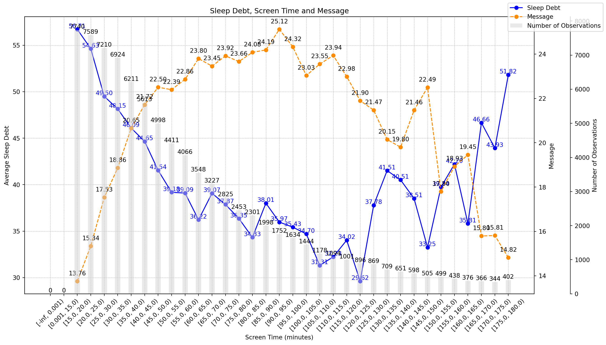
Clustering Analysis
Cluster=11
Front view
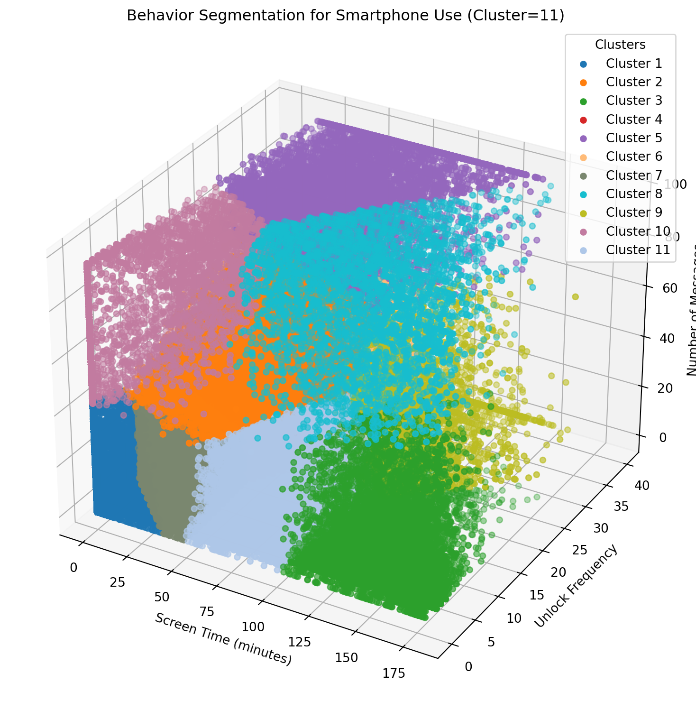
Rear view
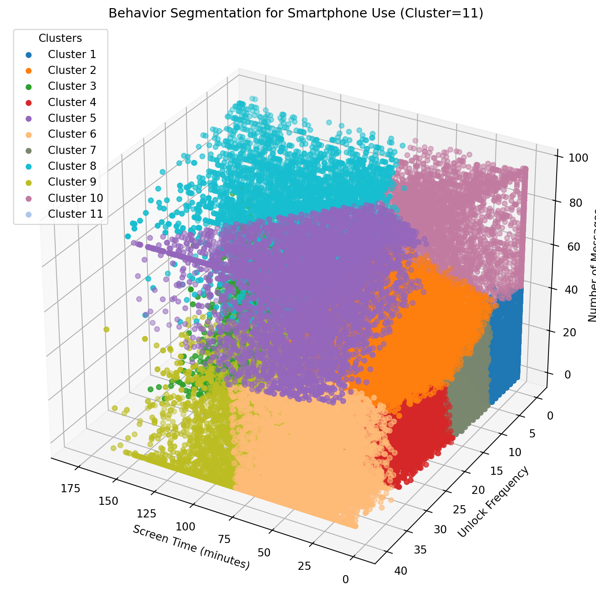
Descriptive Statistics by Cluster
Sleep Debt
count mean std min 25% 50% 75% max
cluster
1 29731.0 54.26 92.30 -192.0 -8.0 54.0 116.0 291.0
2 9783.0 51.81 86.73 -192.0 -5.0 51.0 108.0 291.0
3 6721.0 39.10 89.50 -188.0 -20.0 39.0 96.0 291.0
4 14691.0 50.80 88.35 -192.0 -8.0 49.0 109.0 291.0
5 6637.0 50.70 87.91 -192.0 -8.0 48.0 109.0 291.0
6 8394.0 54.24 87.40 -192.0 -4.0 52.0 112.0 291.0
7 25485.0 49.98 87.46 -192.0 -7.0 49.0 107.0 291.0
8 3522.0 31.53 83.83 -189.0 -24.0 33.0 85.0 291.0
9 5691.0 34.71 88.16 -192.0 -21.0 33.0 89.0 290.0
10 4553.0 54.83 86.60 -192.0 -3.0 53.0 111.0 290.0
11 13063.0 35.98 86.95 -192.0 -21.0 35.0 90.0 291.0The above summary suggests that cluster 2 has the minimal sleep debt of 31.53 minutes. In comparison, cluster 10 has the maximal sleep debt of 54.76 minutes.
Screen Time
count mean std min 25% 50% 75% max
cluster
1 29731.0 2.35 4.67 0.00 0.00 0.00 2.61 36.12
2 9783.0 37.16 17.71 1.87 23.38 35.18 49.14 93.46
3 6721.0 138.19 21.30 101.02 119.97 135.61 155.20 179.99
4 14691.0 32.98 14.23 0.45 21.82 32.08 43.55 68.90
5 6637.0 55.61 23.64 5.67 37.93 52.48 70.42 142.23
6 8394.0 43.65 16.77 1.67 30.91 43.38 56.16 83.39
7 25485.0 22.39 11.61 0.07 12.83 21.00 31.16 49.33
8 3522.0 104.87 28.64 52.03 82.75 101.20 124.19 179.71
9 5691.0 92.72 18.96 59.61 78.27 89.76 104.32 167.02
10 4553.0 14.79 17.52 0.00 0.00 6.98 27.32 69.18
11 13063.0 72.40 15.81 46.53 58.99 70.46 84.62 109.02Unlock
count mean std min 25% 50% 75% max
cluster
1 29731.0 1.20 1.86 0.0 0.0 0.0 2.0 7.0
2 9783.0 17.25 5.93 0.0 13.0 17.0 21.0 34.0
3 6721.0 7.73 5.04 0.0 4.0 7.0 11.0 27.0
4 14691.0 20.50 3.80 14.0 17.0 20.0 23.0 30.0
5 6637.0 33.17 6.60 17.0 28.0 34.0 40.0 40.0
6 8394.0 36.15 4.08 27.0 32.0 37.0 40.0 40.0
7 25485.0 9.29 3.20 0.0 7.0 9.0 12.0 17.0
8 3522.0 15.51 6.83 0.0 11.0 15.0 20.0 39.0
9 5691.0 28.55 6.75 17.0 23.0 27.0 33.0 40.0
10 4553.0 5.53 6.12 0.0 0.0 3.0 11.0 22.0
11 13063.0 10.38 4.57 0.0 7.0 10.0 14.0 20.0Message
count mean std min 25% 50% 75% max
cluster
1 29731.0 4.47 8.64 0.0 0.0 0.0 5.0 42.0
2 9783.0 40.47 11.46 20.0 31.0 39.0 48.0 75.0
3 6721.0 7.61 12.12 0.0 0.0 0.0 11.0 59.0
4 14691.0 4.75 6.80 0.0 0.0 0.0 9.0 28.0
5 6637.0 84.62 14.77 46.0 73.0 96.0 96.0 96.0
6 8394.0 9.59 13.45 0.0 0.0 1.0 17.0 50.0
7 25485.0 5.27 7.42 0.0 0.0 1.0 9.0 37.0
8 3522.0 79.59 17.57 39.0 65.0 85.0 96.0 96.0
9 5691.0 7.79 12.24 0.0 0.0 0.0 13.0 55.0
10 4553.0 77.49 17.79 41.0 62.0 80.0 96.0 96.0
11 13063.0 5.81 8.88 0.0 0.0 0.0 9.0 48.0The table above suggests the cluster 2 has the second highest message frequency, 79.57. It implies that message might reduce sleep debt.
Close Message
count mean std min 25% 50% 75% max
cluster
1 29731.0 1.55 4.82 0.0 0.0 0.0 0.0 42.0
2 9783.0 16.58 17.13 0.0 0.0 12.0 29.0 72.0
3 6721.0 3.00 7.69 0.0 0.0 0.0 1.0 59.0
4 14691.0 1.66 4.02 0.0 0.0 0.0 0.0 26.0
5 6637.0 47.28 60.82 0.0 0.0 27.0 74.0 635.0
6 8394.0 3.38 7.94 0.0 0.0 0.0 1.0 49.0
7 25485.0 1.92 4.47 0.0 0.0 0.0 1.0 35.0
8 3522.0 49.23 71.98 0.0 0.0 28.0 68.0 867.0
9 5691.0 2.82 7.29 0.0 0.0 0.0 0.0 55.0
10 4553.0 40.35 56.13 0.0 0.0 24.0 61.0 666.0
11 13063.0 2.18 5.45 0.0 0.0 0.0 1.0 44.0The table above suggests the cluster 2 has the highest close message frequency, 49.06. It implies that close message might reduce sleep debt.
Family Message
count mean std min 25% 50% 75% max
cluster
1 29731.0 0.42 2.15 0.0 0.0 0.0 0.0 40.0
2 9783.0 3.19 7.82 0.0 0.0 0.0 2.0 65.0
3 6721.0 0.68 3.07 0.0 0.0 0.0 0.0 51.0
4 14691.0 0.45 1.89 0.0 0.0 0.0 0.0 22.0
5 6637.0 4.67 14.44 0.0 0.0 0.0 1.0 185.0
6 8394.0 0.63 2.90 0.0 0.0 0.0 0.0 44.0
7 25485.0 0.55 2.13 0.0 0.0 0.0 0.0 34.0
8 3522.0 5.89 18.45 0.0 0.0 0.0 2.0 249.0
9 5691.0 0.72 3.15 0.0 0.0 0.0 0.0 43.0
10 4553.0 5.07 15.68 0.0 0.0 0.0 1.0 280.0
11 13063.0 0.59 2.42 0.0 0.0 0.0 0.0 38.0The table above suggests the cluster 2 has the highest family message frequency, 5.89. It implies that family message might reduce sleep debt.
Friend Message
count mean std min 25% 50% 75% max
cluster
1 29731.0 1.05 3.84 0.0 0.0 0.0 0.0 42.0
2 9783.0 10.42 14.15 0.0 0.0 3.0 18.0 70.0
3 6721.0 1.92 5.98 0.0 0.0 0.0 0.0 55.0
4 14691.0 1.26 3.46 0.0 0.0 0.0 0.0 26.0
5 6637.0 24.31 39.81 0.0 0.0 4.0 36.0 416.0
6 8394.0 2.65 6.90 0.0 0.0 0.0 0.0 49.0
7 25485.0 1.34 3.62 0.0 0.0 0.0 0.0 36.0
8 3522.0 27.03 52.63 0.0 0.0 3.0 37.0 735.0
9 5691.0 2.09 6.23 0.0 0.0 0.0 0.0 55.0
10 4553.0 23.77 42.00 0.0 0.0 4.0 35.0 583.0
11 13063.0 1.42 4.20 0.0 0.0 0.0 0.0 42.0Romantic Message
count mean std min 25% 50% 75% max
cluster
1 29731.0 0.40 2.74 0.0 0.0 0.0 0.00 42.0
2 9783.0 5.88 13.55 0.0 0.0 0.0 0.00 71.0
3 6721.0 0.96 4.67 0.0 0.0 0.0 0.00 59.0
4 14691.0 0.36 2.09 0.0 0.0 0.0 0.00 25.0
5 6637.0 24.97 54.39 0.0 0.0 0.0 25.00 634.0
6 8394.0 0.91 4.60 0.0 0.0 0.0 0.00 45.0
7 25485.0 0.47 2.55 0.0 0.0 0.0 0.00 35.0
8 3522.0 22.36 58.18 0.0 0.0 0.0 6.75 866.0
9 5691.0 0.67 3.99 0.0 0.0 0.0 0.00 49.0
10 4553.0 17.45 45.80 0.0 0.0 0.0 0.00 666.0
11 13063.0 0.63 3.36 0.0 0.0 0.0 0.00 44.0Steps
count mean std min 25% 50% 75% max
cluster
1 29731.0 12227.1 5988.8 315.0 8099.0 11482.0 15477.0 48887.0
2 9783.0 12330.0 5311.0 260.0 8724.5 11845.0 15316.5 64226.0
3 6721.0 10309.6 5482.3 350.0 6265.0 9771.0 13413.0 46359.0
4 14691.0 12162.5 5304.3 527.0 8518.0 11680.0 15114.5 40872.0
5 6637.0 12147.9 5217.4 735.0 8486.0 11704.0 15273.0 36569.0
6 8394.0 12287.5 5267.6 880.0 8579.2 11825.0 15330.5 38110.0
7 25485.0 11798.2 5381.3 549.0 8108.0 11323.0 14879.0 44008.0
8 3522.0 10756.5 5145.6 550.0 7065.8 10425.0 13748.0 36031.0
9 5691.0 10630.7 4895.5 704.0 7074.0 10165.0 13516.5 38321.0
10 4553.0 12309.4 5142.5 858.0 8858.0 11815.0 15370.0 36287.0
11 13063.0 10775.7 5175.6 517.0 7087.0 10248.0 13755.5 52865.0Cluster=10
Front view
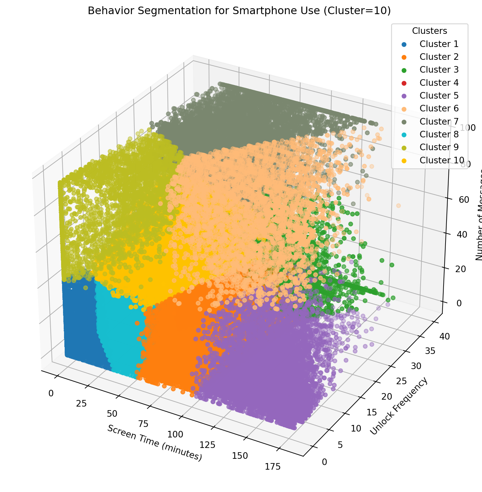
Rear view
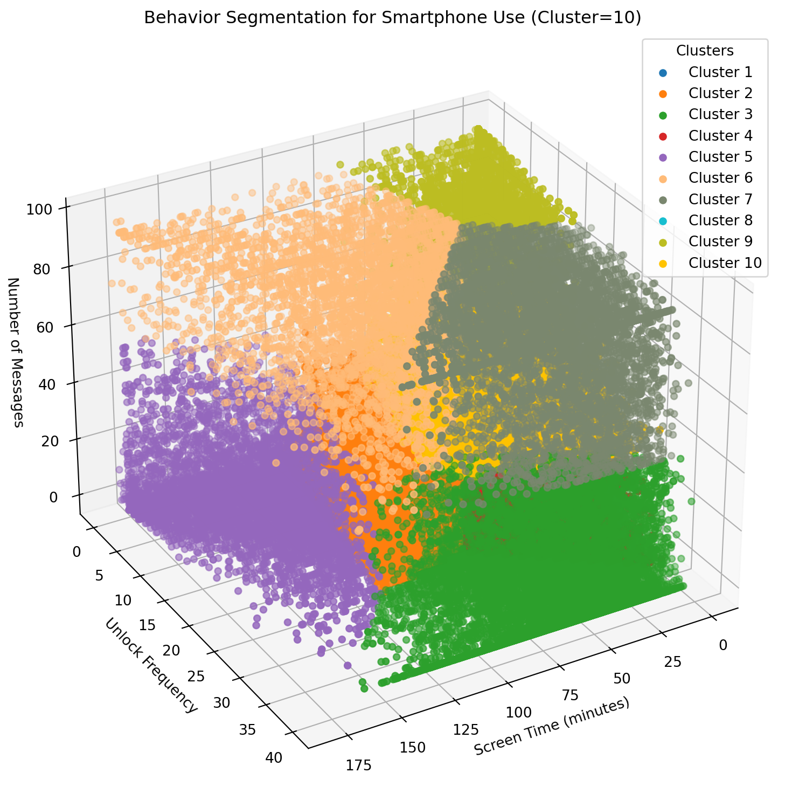
Descriptive Statistics by Cluster
Sleep Debt
count mean std min 25% 50% 75% max
cluster
1 30561.0 54.34 92.13 -192.0 -8.0 54.0 116.0 291.0
2 14246.0 35.36 86.93 -192.0 -22.0 35.0 89.0 291.0
3 10367.0 47.49 87.71 -192.0 -9.0 46.0 105.0 291.0
4 14355.0 51.93 88.34 -192.0 -7.0 50.0 110.0 291.0
5 6952.0 38.90 89.59 -188.0 -20.0 39.0 96.0 291.0
6 3664.0 31.61 83.84 -189.0 -24.0 33.0 85.0 291.0
7 6645.0 51.18 87.79 -192.0 -7.0 49.0 110.0 291.0
8 26990.0 49.26 87.68 -192.0 -8.0 49.0 106.0 291.0
9 4605.0 54.77 86.58 -192.0 -3.0 53.0 111.0 290.0
10 9886.0 51.91 86.95 -192.0 -5.0 51.0 108.0 291.0The above summary suggests that cluster 6 has the minimal sleep debt of 31.41 minutes. In comparison, cluster 4 has the maximal sleep debt of 54.50 minutes.
Screen Time
count mean std min 25% 50% 75% max
cluster
1 30561.0 2.59 4.95 0.00 0.00 0.00 3.18 37.61
2 14246.0 76.30 16.10 48.12 62.75 74.59 88.98 118.02
3 10367.0 60.09 26.40 3.68 40.21 57.13 77.18 159.98
4 14355.0 32.76 14.37 0.45 21.65 31.64 43.15 72.02
5 6952.0 138.25 20.82 100.45 120.68 135.33 154.72 179.99
6 3664.0 105.07 28.17 52.03 83.28 101.69 123.75 179.71
7 6645.0 55.27 23.58 5.67 37.63 52.03 69.87 142.23
8 26990.0 24.09 12.47 0.07 14.01 22.50 33.37 56.10
9 4605.0 14.98 17.64 0.00 0.00 7.32 27.52 71.03
10 9886.0 37.55 17.92 1.87 23.73 35.50 49.68 95.87Unlock
count mean std min 25% 50% 75% max
cluster
1 30561.0 1.33 1.99 0.0 0.0 0.0 2.0 8.0
2 14246.0 12.16 5.70 0.0 8.0 12.0 16.0 27.0
3 10367.0 35.83 4.58 24.0 32.0 37.0 40.0 40.0
4 14355.0 21.83 4.23 15.0 18.0 21.0 25.0 35.0
5 6952.0 8.49 6.18 0.0 4.0 7.0 12.0 36.0
6 3664.0 15.91 7.11 0.0 11.0 16.0 21.0 40.0
7 6645.0 33.25 6.60 17.0 28.0 34.0 40.0 40.0
8 26990.0 9.62 3.36 0.0 7.0 10.0 12.0 17.0
9 4605.0 5.57 6.12 0.0 0.0 3.0 11.0 22.0
10 9886.0 17.59 6.08 0.0 13.0 17.0 22.0 36.0Message
count mean std min 25% 50% 75% max
cluster
1 30561.0 4.48 8.63 0.0 0.0 0.0 5.0 42.0
2 14246.0 6.02 9.13 0.0 0.0 0.0 10.0 44.0
3 10367.0 8.52 12.78 0.0 0.0 0.0 15.0 49.0
4 14355.0 4.97 7.10 0.0 0.0 0.0 9.0 31.0
5 6952.0 7.41 11.91 0.0 0.0 0.0 11.0 59.0
6 3664.0 78.20 18.46 36.0 62.0 83.0 96.0 96.0
7 6645.0 84.49 14.96 46.0 73.0 96.0 96.0 96.0
8 26990.0 5.27 7.43 0.0 0.0 1.0 9.0 37.0
9 4605.0 77.32 17.88 41.0 62.0 79.0 96.0 96.0
10 9886.0 40.41 11.41 20.0 31.0 39.0 48.0 75.0The table above suggests the cluster 4 has the second highest message frequency, 78.15. It implies that message might reduce sleep debt.
Close Message
count mean std min 25% 50% 75% max
cluster
1 30561.0 1.55 4.80 0.0 0.0 0.0 0.0 42.0
2 14246.0 2.22 5.54 0.0 0.0 0.0 1.0 44.0
3 10367.0 3.02 7.50 0.0 0.0 0.0 0.0 49.0
4 14355.0 1.74 4.18 0.0 0.0 0.0 0.0 30.0
5 6952.0 2.92 7.53 0.0 0.0 0.0 1.0 59.0
6 3664.0 48.15 71.03 0.0 0.0 28.0 66.0 867.0
7 6645.0 47.08 60.70 0.0 0.0 27.0 74.0 635.0
8 26990.0 1.93 4.50 0.0 0.0 0.0 1.0 36.0
9 4605.0 40.22 55.95 0.0 0.0 24.0 61.0 666.0
10 9886.0 16.52 17.11 0.0 0.0 12.0 29.0 72.0The table above suggests the cluster 6 has the highest close message frequency, 47.81. It implies that close message might reduce sleep debt.
Family Message
count mean std min 25% 50% 75% max
cluster
1 30561.0 0.42 2.13 0.0 0.0 0.0 0.0 40.0
2 14246.0 0.60 2.49 0.0 0.0 0.0 0.0 38.0
3 10367.0 0.61 2.84 0.0 0.0 0.0 0.0 44.0
4 14355.0 0.46 1.90 0.0 0.0 0.0 0.0 25.0
5 6952.0 0.67 3.02 0.0 0.0 0.0 0.0 51.0
6 3664.0 5.83 18.23 0.0 0.0 0.0 2.0 249.0
7 6645.0 4.66 14.40 0.0 0.0 0.0 1.0 185.0
8 26990.0 0.56 2.16 0.0 0.0 0.0 0.0 34.0
9 4605.0 5.06 15.63 0.0 0.0 0.0 1.0 280.0
10 9886.0 3.17 7.78 0.0 0.0 0.0 2.0 65.0The table above suggests the cluster 6 has the highest family message frequency, 5.83. It implies that family message might reduce sleep debt.
Friend Message
count mean std min 25% 50% 75% max
cluster
1 30561.0 1.06 3.84 0.0 0.0 0.0 0.0 42.0
2 14246.0 1.48 4.35 0.0 0.0 0.0 0.0 42.0
3 10367.0 2.33 6.49 0.0 0.0 0.0 0.0 46.0
4 14355.0 1.34 3.66 0.0 0.0 0.0 0.0 30.0
5 6952.0 1.89 5.89 0.0 0.0 0.0 0.0 55.0
6 3664.0 26.40 51.74 0.0 0.0 3.0 36.0 735.0
7 6645.0 24.28 39.75 0.0 0.0 4.0 36.0 416.0
8 26990.0 1.33 3.61 0.0 0.0 0.0 0.0 33.0
9 4605.0 23.74 41.91 0.0 0.0 4.0 35.0 583.0
10 9886.0 10.41 14.14 0.0 0.0 3.0 18.0 70.0Romantic Message
count mean std min 25% 50% 75% max
cluster
1 30561.0 0.40 2.73 0.0 0.0 0.0 0.0 42.0
2 14246.0 0.61 3.32 0.0 0.0 0.0 0.0 44.0
3 10367.0 0.78 4.29 0.0 0.0 0.0 0.0 49.0
4 14355.0 0.38 2.18 0.0 0.0 0.0 0.0 28.0
5 6952.0 0.92 4.55 0.0 0.0 0.0 0.0 59.0
6 3664.0 21.84 57.41 0.0 0.0 0.0 5.0 866.0
7 6645.0 24.82 54.21 0.0 0.0 0.0 24.0 634.0
8 26990.0 0.48 2.59 0.0 0.0 0.0 0.0 36.0
9 4605.0 17.36 45.62 0.0 0.0 0.0 0.0 666.0
10 9886.0 5.86 13.54 0.0 0.0 0.0 0.0 71.0Steps
count mean std min 25% 50% 75% max
cluster
1 30561.0 12211.2 5974.5 315.0 8092.0 11473.0 15452.0 48887.0
2 14246.0 10765.2 5161.3 517.0 7085.0 10246.5 13735.5 52865.0
3 10367.0 11733.8 5213.8 716.0 8051.0 11255.0 14790.5 38110.0
4 14355.0 12223.8 5276.3 527.0 8602.0 11757.0 15143.5 40872.0
5 6952.0 10291.6 5454.9 350.0 6267.2 9729.0 13383.0 46359.0
6 3664.0 10727.0 5118.6 550.0 7043.8 10408.5 13741.0 36031.0
7 6645.0 12153.0 5232.2 735.0 8478.0 11704.0 15278.0 36569.0
8 26990.0 11782.1 5372.7 549.0 8091.0 11293.0 14868.0 44008.0
9 4605.0 12325.3 5149.1 858.0 8884.0 11842.0 15390.0 36287.0
10 9886.0 12313.2 5301.8 260.0 8707.2 11840.0 15310.2 64226.0Cluster=9
Front view
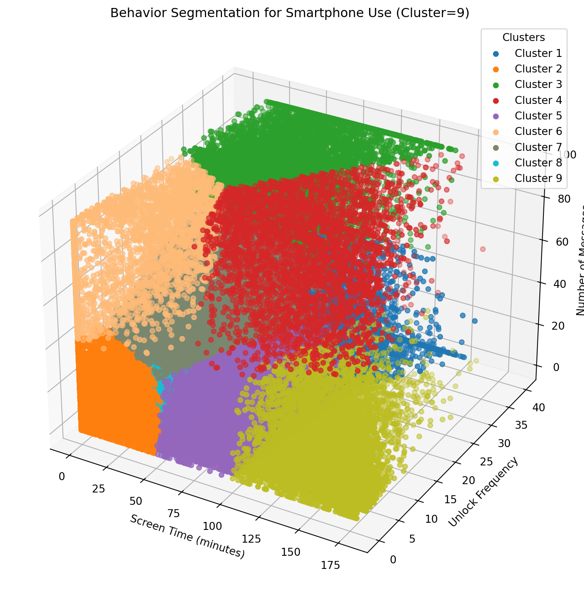
Rear view
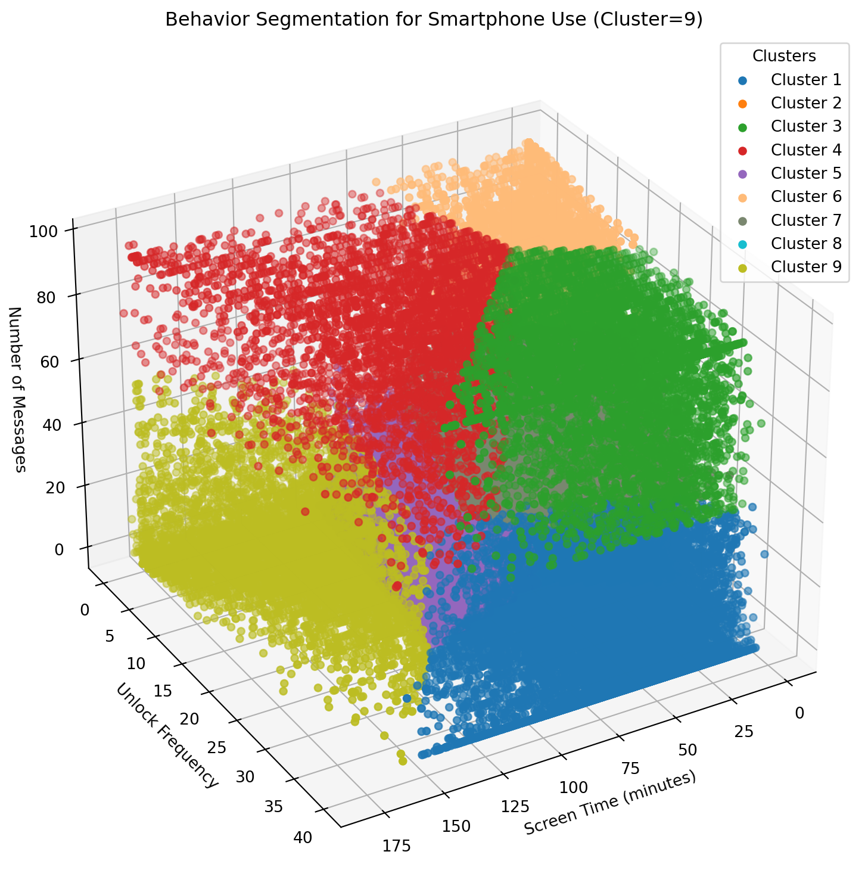
Descriptive Statistics by Cluster
Sleep Debt
count mean std min 25% 50% 75% max
cluster
1 14390.0 48.54 87.77 -192.0 -9.0 47.0 106.0 291.0
2 37217.0 53.42 91.71 -192.0 -9.0 53.0 115.0 291.0
3 6769.0 50.96 87.88 -192.0 -8.0 49.0 110.0 291.0
4 3740.0 31.59 83.90 -189.0 -24.0 33.0 85.0 291.0
5 15411.0 35.96 87.04 -192.0 -21.0 35.0 90.0 291.0
6 4722.0 54.59 86.61 -192.0 -3.0 53.0 111.0 290.0
7 10467.0 52.40 87.13 -192.0 -5.0 51.0 109.0 291.0
8 28093.0 50.73 87.35 -192.0 -7.0 50.0 108.0 291.0
9 7462.0 38.59 89.66 -188.0 -20.0 38.0 96.0 291.0The above summary suggests that cluster 5 has the minimal sleep debt of 31.47 minutes. In comparison, cluster 8 has the maximal sleep debt of 54.61 minutes.
Screen Time
count mean std min 25% 50% 75% max
cluster
1 14390.0 53.78 25.61 1.67 34.38 50.04 69.32 158.14
2 37217.0 5.38 8.64 0.00 0.00 0.05 8.08 50.28
3 6769.0 55.26 23.54 5.67 37.70 52.01 69.84 142.23
4 3740.0 104.68 28.14 52.03 83.00 101.06 123.20 179.71
5 15411.0 72.47 16.12 44.88 58.49 70.39 85.23 112.09
6 4722.0 15.43 17.82 0.00 0.00 8.40 28.20 71.03
7 10467.0 36.93 17.60 1.87 23.34 34.90 48.57 95.87
8 28093.0 25.99 11.83 0.28 16.47 25.30 35.22 53.10
9 7462.0 136.28 21.45 99.19 118.13 132.88 153.17 179.99Unlock
count mean std min 25% 50% 75% max
cluster
1 14390.0 33.30 5.72 22.0 28.0 33.0 40.0 40.0
2 37217.0 2.18 2.70 0.0 0.0 0.0 4.0 10.0
3 6769.0 33.25 6.60 17.0 28.0 34.0 40.0 40.0
4 3740.0 15.94 7.11 0.0 11.0 16.0 21.0 40.0
5 15411.0 11.92 5.76 0.0 7.0 12.0 16.0 26.0
6 4722.0 5.75 6.20 0.0 0.0 4.0 11.0 22.0
7 10467.0 17.70 6.08 0.0 13.0 18.0 22.0 36.0
8 28093.0 13.80 4.80 4.0 10.0 13.0 17.0 28.0
9 7462.0 8.95 6.51 0.0 4.0 7.0 12.0 40.0Message
count mean std min 25% 50% 75% max
cluster
1 14390.0 7.28 11.32 0.0 0.0 0.0 12.0 45.0
2 37217.0 4.55 8.43 0.0 0.0 0.0 5.0 42.0
3 6769.0 83.85 15.49 46.0 72.0 95.0 96.0 96.0
4 3740.0 77.63 18.76 35.0 62.0 82.0 96.0 96.0
5 15411.0 5.65 8.68 0.0 0.0 0.0 9.0 44.0
6 4722.0 77.01 17.88 41.0 62.0 79.0 96.0 96.0
7 10467.0 38.68 11.59 15.0 29.0 37.0 47.0 73.0
8 28093.0 4.86 6.74 0.0 0.0 1.0 8.0 29.0
9 7462.0 7.45 11.86 0.0 0.0 0.0 11.0 58.0The table above suggests the cluster 5 has the second highest message frequency, 77.59. It implies that message might reduce sleep debt.
Close Message
count mean std min 25% 50% 75% max
cluster
1 14390.0 2.56 6.60 0.0 0.0 0.0 0.0 45.0
2 37217.0 1.58 4.73 0.0 0.0 0.0 0.0 42.0
3 6769.0 46.58 60.31 0.0 0.0 26.0 73.0 635.0
4 3740.0 47.54 70.49 0.0 0.0 27.0 65.0 867.0
5 15411.0 2.08 5.25 0.0 0.0 0.0 1.0 42.0
6 4722.0 39.94 55.46 0.0 0.0 23.0 60.0 666.0
7 10467.0 15.75 16.51 0.0 0.0 11.0 28.0 71.0
8 28093.0 1.76 4.08 0.0 0.0 0.0 1.0 28.0
9 7462.0 2.92 7.47 0.0 0.0 0.0 1.0 56.0The table above suggests the cluster 5 has the highest close message frequency, 47.44. It implies that close message might reduce sleep debt.
Family Message
count mean std min 25% 50% 75% max
cluster
1 14390.0 0.55 2.56 0.0 0.0 0.0 0.0 42.0
2 37217.0 0.43 2.10 0.0 0.0 0.0 0.0 40.0
3 6769.0 4.63 14.32 0.0 0.0 0.0 1.0 185.0
4 3740.0 5.80 18.11 0.0 0.0 0.0 2.0 249.0
5 15411.0 0.57 2.40 0.0 0.0 0.0 0.0 38.0
6 4722.0 5.02 15.48 0.0 0.0 0.0 2.0 280.0
7 10467.0 3.07 7.56 0.0 0.0 0.0 2.0 61.0
8 28093.0 0.52 2.02 0.0 0.0 0.0 0.0 26.0
9 7462.0 0.66 2.93 0.0 0.0 0.0 0.0 51.0The table above suggests the cluster 5 has the highest family message frequency, 5.76. It implies that family message might reduce sleep debt.
Friend Message
count mean std min 25% 50% 75% max
cluster
1 14390.0 1.97 5.70 0.0 0.0 0.0 0.0 44.0
2 37217.0 1.09 3.79 0.0 0.0 0.0 0.0 42.0
3 6769.0 24.12 39.48 0.0 0.0 4.0 35.0 416.0
4 3740.0 26.08 51.30 0.0 0.0 2.0 35.0 735.0
5 15411.0 1.39 4.12 0.0 0.0 0.0 0.0 42.0
6 4722.0 23.57 41.54 0.0 0.0 4.0 35.0 583.0
7 10467.0 9.98 13.62 0.0 0.0 2.0 17.0 70.0
8 28093.0 1.25 3.35 0.0 0.0 0.0 0.0 27.0
9 7462.0 1.90 5.89 0.0 0.0 0.0 0.0 55.0Romantic Message
count mean std min 25% 50% 75% max
cluster
1 14390.0 0.66 3.74 0.0 0.0 0.0 0.0 45.0
2 37217.0 0.40 2.70 0.0 0.0 0.0 0.0 42.0
3 6769.0 24.47 53.80 0.0 0.0 0.0 22.0 634.0
4 3740.0 21.55 56.93 0.0 0.0 0.0 4.0 866.0
5 15411.0 0.57 3.12 0.0 0.0 0.0 0.0 42.0
6 4722.0 17.22 45.21 0.0 0.0 0.0 0.0 666.0
7 10467.0 5.50 12.94 0.0 0.0 0.0 0.0 71.0
8 28093.0 0.40 2.24 0.0 0.0 0.0 0.0 28.0
9 7462.0 0.92 4.52 0.0 0.0 0.0 0.0 45.0Steps
count mean std min 25% 50% 75% max
cluster
1 14390.0 11840.4 5206.8 623.0 8174.0 11374.0 14886.0 40872.0
2 37217.0 12100.1 5877.6 315.0 8058.0 11404.0 15285.0 48887.0
3 6769.0 12152.2 5221.3 735.0 8483.0 11705.0 15282.0 36569.0
4 3740.0 10739.6 5147.0 550.0 7042.2 10407.5 13748.2 36031.0
5 15411.0 10821.3 5178.3 517.0 7137.0 10284.0 13788.0 52865.0
6 4722.0 12328.0 5143.5 858.0 8895.0 11840.0 15369.5 36287.0
7 10467.0 12352.3 5321.1 260.0 8728.5 11875.0 15326.0 64226.0
8 28093.0 12018.5 5349.6 527.0 8342.0 11536.0 15064.0 42089.0
9 7462.0 10280.3 5420.2 350.0 6276.8 9721.5 13373.5 46359.0Cluster=8
Front view
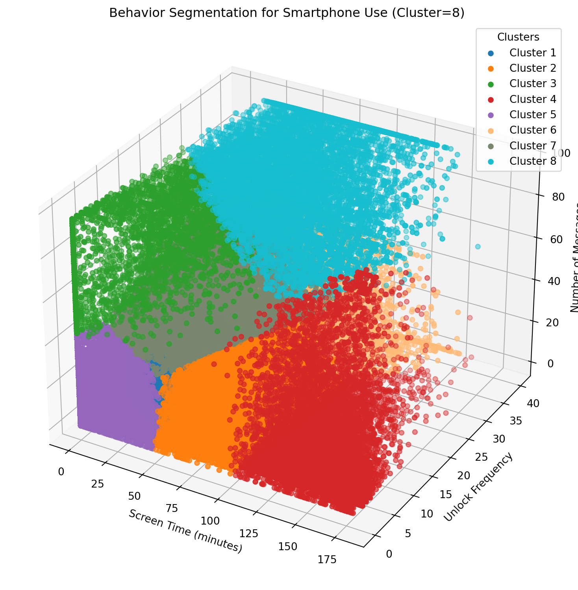
Rear view
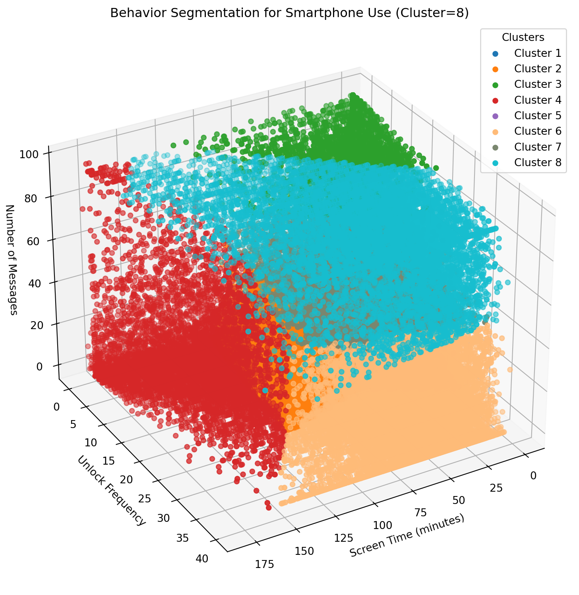
Descriptive Statistics by Cluster
Sleep Debt
count mean std min 25% 50% 75% max
cluster
1 28318.0 51.02 87.39 -192.0 -6.0 50.0 108.0 291.0
2 15384.0 36.00 87.01 -192.0 -21.0 35.0 90.0 291.0
3 4862.0 53.26 86.65 -192.0 -4.0 52.0 109.0 290.0
4 8044.0 37.73 89.46 -188.0 -22.0 38.0 95.0 291.0
5 37567.0 53.35 91.65 -192.0 -8.0 53.0 115.0 291.0
6 14485.0 48.65 87.85 -192.0 -9.0 47.0 106.0 291.0
7 10724.0 50.86 87.02 -192.0 -6.0 50.0 107.0 291.0
8 8887.0 45.87 86.99 -192.0 -12.0 44.0 102.0 291.0The above summary suggests that cluster 5 has the minimal sleep debt of 31.47 minutes. In comparison, cluster 8 has the maximal sleep debt of 54.61 minutes.
Screen Time
count mean std min 25% 50% 75% max
cluster
1 28318.0 26.12 11.87 0.28 16.60 25.42 35.37 53.82
2 15384.0 72.71 16.23 44.88 58.66 70.60 85.56 113.84
3 4862.0 18.79 22.49 0.00 0.00 10.81 32.10 122.67
4 8044.0 136.29 21.56 90.75 118.13 132.99 153.24 179.99
5 37567.0 5.48 8.75 0.00 0.00 0.10 8.27 50.28
6 14485.0 53.59 25.50 1.67 34.25 49.90 68.95 151.87
7 10724.0 39.43 20.04 1.87 24.28 36.46 51.71 107.59
8 8887.0 68.88 32.02 7.57 44.06 63.85 89.74 176.43Unlock
count mean std min 25% 50% 75% max
cluster
1 28318.0 13.94 4.82 4.0 10.0 13.0 17.0 28.0
2 15384.0 11.91 5.78 0.0 7.0 11.0 16.0 26.0
3 4862.0 5.90 6.14 0.0 0.0 4.0 11.0 24.0
4 8044.0 9.12 6.59 0.0 4.0 8.0 13.0 40.0
5 37567.0 2.22 2.73 0.0 0.0 1.0 4.0 10.0
6 14485.0 33.44 5.68 22.0 28.0 33.0 40.0 40.0
7 10724.0 17.61 6.21 0.0 13.0 17.0 22.0 37.0
8 8887.0 29.17 9.25 2.0 22.0 30.0 39.0 40.0Message
count mean std min 25% 50% 75% max
cluster
1 28318.0 5.07 6.98 0.0 0.0 1.0 9.0 30.0
2 15384.0 5.39 8.40 0.0 0.0 0.0 8.0 48.0
3 4862.0 78.23 17.23 43.0 64.0 80.0 96.0 96.0
4 8044.0 11.92 18.83 0.0 0.0 2.0 18.0 96.0
5 37567.0 4.63 8.58 0.0 0.0 0.0 5.0 43.0
6 14485.0 7.91 12.21 0.0 0.0 0.0 13.0 53.0
7 10724.0 40.09 11.73 16.0 31.0 39.0 48.0 73.0
8 8887.0 85.37 14.16 41.0 75.0 96.0 96.0 96.0The table above suggests the cluster 5 has the second highest message frequency, 77.59. It implies that message might reduce sleep debt.
Close Message
count mean std min 25% 50% 75% max
cluster
1 28318.0 1.84 4.23 0.0 0.0 0.0 1.0 28.0
2 15384.0 1.99 5.07 0.0 0.0 0.0 0.0 44.0
3 4862.0 41.29 58.12 0.0 0.0 24.0 62.0 840.0
4 8044.0 5.14 15.90 0.0 0.0 0.0 2.0 710.0
5 37567.0 1.61 4.83 0.0 0.0 0.0 0.0 43.0
6 14485.0 2.77 7.06 0.0 0.0 0.0 0.0 50.0
7 10724.0 16.43 17.12 0.0 0.0 11.0 29.0 72.0
8 8887.0 49.95 66.22 0.0 0.0 29.0 76.0 867.0The table above suggests the cluster 5 has the highest close message frequency, 47.44. It implies that close message might reduce sleep debt.
Family Message
count mean std min 25% 50% 75% max
cluster
1 28318.0 0.54 2.09 0.0 0.0 0.0 0.0 27.0
2 15384.0 0.55 2.30 0.0 0.0 0.0 0.0 38.0
3 4862.0 5.31 16.54 0.0 0.0 0.0 2.0 280.0
4 8044.0 0.94 4.18 0.0 0.0 0.0 0.0 75.0
5 37567.0 0.43 2.10 0.0 0.0 0.0 0.0 40.0
6 14485.0 0.58 2.70 0.0 0.0 0.0 0.0 44.0
7 10724.0 3.11 7.68 0.0 0.0 0.0 2.0 61.0
8 8887.0 5.17 16.07 0.0 0.0 0.0 1.0 231.0The table above suggests the cluster 5 has the highest family message frequency, 5.76. It implies that family message might reduce sleep debt.
Friend Message
count mean std min 25% 50% 75% max
cluster
1 28318.0 1.30 3.48 0.0 0.0 0.0 0.0 28.0
2 15384.0 1.33 3.98 0.0 0.0 0.0 0.0 40.0
3 4862.0 23.93 42.17 0.0 0.0 4.0 35.0 583.0
4 8044.0 3.08 10.10 0.0 0.0 0.0 0.0 268.0
5 37567.0 1.11 3.86 0.0 0.0 0.0 0.0 43.0
6 14485.0 2.14 6.11 0.0 0.0 0.0 0.0 50.0
7 10724.0 10.31 14.05 0.0 0.0 2.0 18.0 71.0
8 8887.0 26.39 46.27 0.0 0.0 4.0 38.0 735.0Romantic Message
count mean std min 25% 50% 75% max
cluster
1 28318.0 0.42 2.31 0.0 0.0 0.0 0.0 28.0
2 15384.0 0.54 3.00 0.0 0.0 0.0 0.0 44.0
3 4862.0 18.01 47.98 0.0 0.0 0.0 0.0 840.0
4 8044.0 1.97 12.34 0.0 0.0 0.0 0.0 700.0
5 37567.0 0.42 2.79 0.0 0.0 0.0 0.0 43.0
6 14485.0 0.71 4.01 0.0 0.0 0.0 0.0 50.0
7 10724.0 5.86 13.59 0.0 0.0 0.0 0.0 71.0
8 8887.0 25.21 56.83 0.0 0.0 0.0 20.0 866.0Steps
count mean std min 25% 50% 75% max
cluster
1 28318.0 12028.7 5351.4 527.0 8346.0 11550.5 15071.0 42089.0
2 15384.0 10799.2 5165.8 517.0 7120.8 10268.5 13756.2 52865.0
3 4862.0 12279.6 5179.5 858.0 8759.0 11779.5 15323.8 36287.0
4 8044.0 10313.3 5398.0 350.0 6334.0 9782.0 13405.5 46359.0
5 37567.0 12100.7 5873.9 315.0 8064.0 11405.0 15284.0 48887.0
6 14485.0 11861.6 5214.1 623.0 8186.0 11403.0 14914.0 40872.0
7 10724.0 12285.9 5318.8 260.0 8646.0 11817.5 15243.0 64226.0
8 8887.0 11722.2 5217.4 550.0 8036.5 11294.0 14832.0 36569.0Cluster=7
Front view
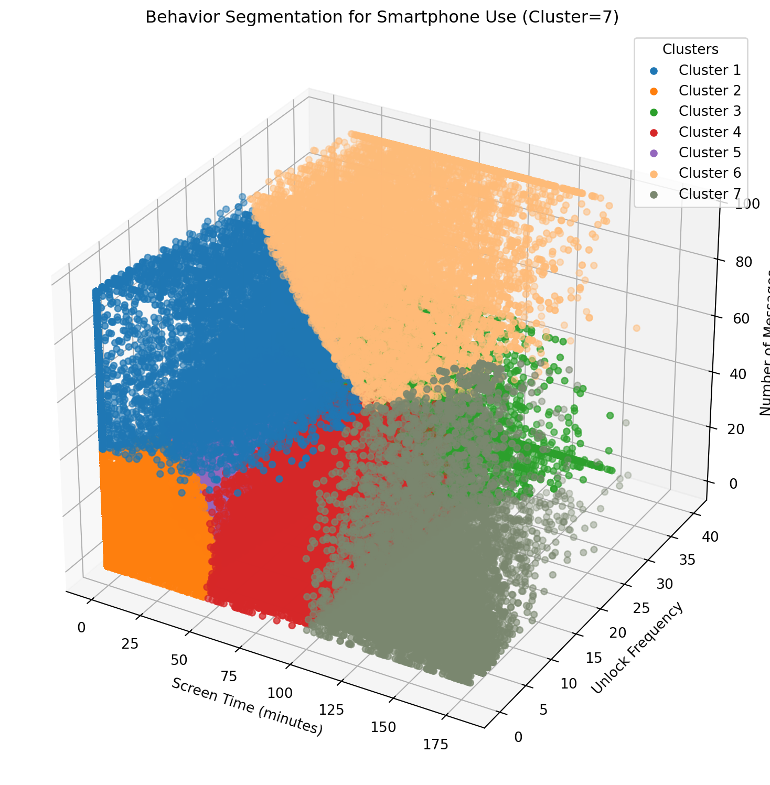
Rear view
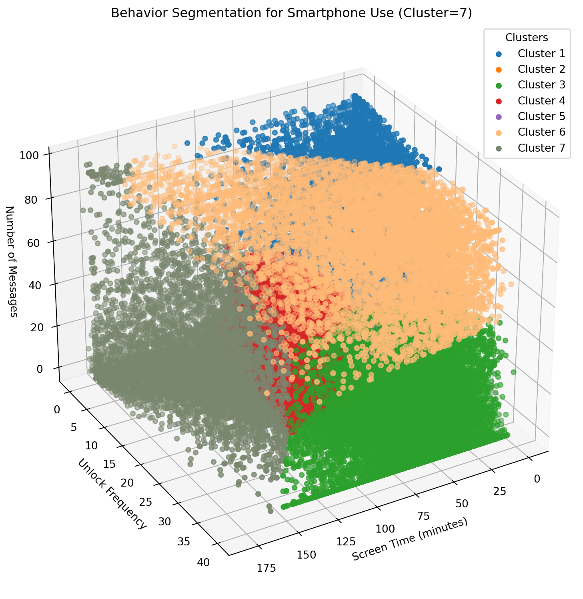
Descriptive Statistics by Cluster
Sleep Debt
count mean std min 25% 50% 75% max
cluster
1 9053.0 53.52 86.01 -192.0 -3.0 52.0 109.0 290.0
2 39025.0 53.01 91.56 -192.0 -9.0 53.0 114.0 291.0
3 15525.0 48.88 88.02 -192.0 -9.0 47.0 107.0 291.0
4 17045.0 35.80 87.05 -192.0 -21.0 35.0 90.0 291.0
5 29667.0 52.09 87.23 -192.0 -5.0 51.0 109.0 291.0
6 9689.0 45.80 87.08 -192.0 -12.0 44.0 102.0 291.0
7 8267.0 37.71 89.42 -188.0 -22.0 38.0 95.0 291.0The above summary suggests that cluster 3 has the minimal sleep debt of 35.79 minutes. In comparison, cluster 6 has the maximal sleep debt of 53.48 minutes.
Screen Time
count mean std min 25% 50% 75% max
cluster
1 9053.0 25.80 22.23 0.00 4.83 23.28 40.17 116.05
2 39025.0 6.17 9.41 0.00 0.00 0.50 9.52 50.28
3 15525.0 53.14 25.17 1.67 34.09 49.56 68.13 151.87
4 17045.0 70.67 16.17 42.39 56.98 68.48 83.12 111.47
5 29667.0 26.32 11.65 0.45 17.05 25.82 35.35 54.84
6 9689.0 68.01 31.58 7.57 43.53 63.12 88.36 176.43
7 8267.0 135.41 21.88 95.86 116.94 132.03 152.67 179.99Unlock
count mean std min 25% 50% 75% max
cluster
1 9053.0 9.85 7.39 0.0 2.0 10.0 15.0 28.0
2 39025.0 2.45 2.91 0.0 0.0 1.0 5.0 11.0
3 15525.0 33.01 5.77 22.0 28.0 33.0 40.0 40.0
4 17045.0 12.03 5.68 0.0 8.0 12.0 16.0 26.0
5 29667.0 14.81 4.77 4.0 11.0 14.0 18.0 29.0
6 9689.0 28.72 9.12 1.0 22.0 29.0 38.0 40.0
7 8267.0 9.16 6.57 0.0 4.0 8.0 13.0 40.0Message
count mean std min 25% 50% 75% max
cluster
1 9053.0 64.49 19.92 33.0 47.0 59.0 82.0 96.0
2 39025.0 4.34 8.08 0.0 0.0 0.0 5.0 41.0
3 15525.0 10.11 14.10 0.0 0.0 1.0 18.0 54.0
4 17045.0 7.42 11.12 0.0 0.0 1.0 12.0 53.0
5 29667.0 8.21 10.49 0.0 0.0 3.0 14.0 43.0
6 9689.0 83.02 16.13 41.0 70.0 95.0 96.0 96.0
7 8267.0 11.51 18.48 0.0 0.0 1.0 16.0 96.0The table above suggests the cluster 3 has the a message frequency of 7.56. It implies that message level is not necessarily associated with sleep debt level.
Close Message
count mean std min 25% 50% 75% max
cluster
1 9053.0 31.41 44.49 0.0 0.0 19.0 47.0 666.0
2 39025.0 1.51 4.54 0.0 0.0 0.0 0.0 41.0
3 15525.0 3.64 8.40 0.0 0.0 0.0 2.0 50.0
4 17045.0 2.86 6.98 0.0 0.0 0.0 1.0 51.0
5 29667.0 3.08 6.55 0.0 0.0 0.0 3.0 42.0
6 9689.0 47.97 65.00 0.0 0.0 27.0 72.0 867.0
7 8267.0 4.94 15.59 0.0 0.0 0.0 2.0 710.0The table above suggests the cluster 3 has the a close message frequency of 2.90. It implies that close message level is not necessarily associated with sleep debt level.
Family Message
count mean std min 25% 50% 75% max
cluster
1 9053.0 4.43 13.22 0.0 0.0 0.0 2.0 280.0
2 39025.0 0.41 2.04 0.0 0.0 0.0 0.0 40.0
3 15525.0 0.74 3.27 0.0 0.0 0.0 0.0 44.0
4 17045.0 0.73 3.02 0.0 0.0 0.0 0.0 47.0
5 29667.0 0.80 2.94 0.0 0.0 0.0 0.0 37.0
6 9689.0 5.12 15.89 0.0 0.0 0.0 1.0 249.0
7 8267.0 0.90 4.03 0.0 0.0 0.0 0.0 75.0The table above suggests the cluster 3 has the a family message frequency of 0.74. It implies that family message might reduce sleep debt.
Friend Message
count mean std min 25% 50% 75% max
cluster
1 9053.0 18.49 33.07 0.0 0.0 4.0 28.0 583.0
2 39025.0 1.04 3.63 0.0 0.0 0.0 0.0 41.0
3 15525.0 2.74 7.11 0.0 0.0 0.0 0.0 50.0
4 17045.0 1.81 5.26 0.0 0.0 0.0 0.0 52.0
5 29667.0 2.16 5.37 0.0 0.0 0.0 1.0 41.0
6 9689.0 25.38 44.93 0.0 0.0 4.0 36.0 735.0
7 8267.0 2.99 9.90 0.0 0.0 0.0 0.0 268.0Romantic Message
count mean std min 25% 50% 75% max
cluster
1 9053.0 13.13 35.79 0.0 0.0 0.0 0.0 666.0
2 39025.0 0.38 2.56 0.0 0.0 0.0 0.0 41.0
3 15525.0 0.99 4.94 0.0 0.0 0.0 0.0 50.0
4 17045.0 0.88 4.43 0.0 0.0 0.0 0.0 50.0
5 29667.0 0.80 3.82 0.0 0.0 0.0 0.0 42.0
6 9689.0 24.05 55.74 0.0 0.0 0.0 17.0 866.0
7 8267.0 1.89 12.11 0.0 0.0 0.0 0.0 700.0Steps
count mean std min 25% 50% 75% max
cluster
1 9053.0 12285.0 5209.1 858.0 8773.0 11772.0 15313.0 38324.0
2 39025.0 12062.3 5850.8 315.0 8043.0 11380.0 15227.0 48887.0
3 15525.0 11895.3 5212.2 584.0 8224.0 11438.0 14949.0 40872.0
4 17045.0 10831.4 5173.4 517.0 7155.0 10300.0 13769.0 52865.0
5 29667.0 12175.9 5361.3 260.0 8490.0 11695.0 15193.0 64226.0
6 9689.0 11759.7 5252.1 550.0 8040.0 11330.0 14878.0 36569.0
7 8267.0 10324.5 5396.1 350.0 6338.0 9808.0 13416.5 46359.0